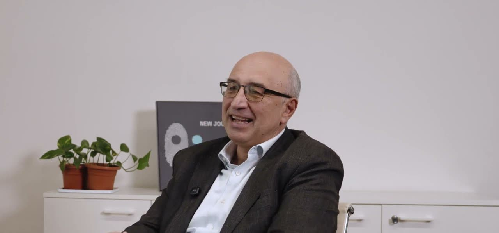

When it’s understood.
Access to data and AI should be within reach of every business, including those that have fallen behind. We start from real processes and make technology understandable to the people who will use it.
We are a software house in Bologna. We build custom software, connect your systems and bring AI into your processes. You work directly with the team, from prototype to adoption.


Access to data and AI should be within reach of every business, including those that have fallen behind. We start from real processes and make technology understandable to the people who will use it.
A solution creates value when it is actually used. We build it to measure and support people through adoption and training, all the way to the result.
We call it Data Democracy: quality digital innovation, accessible to even the smallest businesses. We put data and AI at the service of people and of those who create value for the community.
Every component has a job.
Ours is making them work together.
We get inside the way you work. We listen to the people who live the processes every day and work out together what needs to change. This is where the project begins.
We quickly put something concrete in your hands. A prototype to see, try and discuss with the people who will use it.
The new software talks to what you already have. We connect data, tools and processes so information flows and becomes useful.
We stay connected. We support adoption and keep the solution evolving. Every project brings new knowledge to our ecosystem, for the benefit of those still to come.
A prototype to try, releases to give feedback on and people who know your process.
A lean project team with diverse skills at the table. Choices are discussed with those developing the solution.
Prototypes and incremental releases make the work verifiable. You can try things out, give feedback and revise priorities.
We reuse proven components and practices. We focus the custom work on your processes and the integrations you need.
From technical support to club management: four projects, told together with our clients.

Generative AI in debt collection email workflows.

Administrative processes and CRM, integrated with the booking platform already in use.

Custom software for the firm’s cases, deadlines and activities.

Subsidised finance: data, AI and an algorithm for reporting hours on funding calls.
Autonomous people, trust and a few clear rules: quality, respect, transparency.
We share feedback and solutions. Mistakes become learning; different perspectives help us decide better.
We automate repetitive work and remove unnecessary steps. We study the tools we use and assess their limits and consequences.
Helia and the other ecosystem projects sit alongside our work with companies: products, new ideas and pro bono initiatives.
“Creating an algorithm isn’t enough: you have to make it genuinely usable by businesses.”
IFAB · Marco Becca

We build custom software and solutions based on data, artificial intelligence and automation. We support companies from understanding the problem to the prototype, through to integrating and evolving the solution.
It means putting technology in a position to be understood, adopted and used by as many people in the company as possible. Our work includes supporting the people who will use the solution every day.
Integration is a central part of our approach. We start from the systems and data you already have, assess the possibilities and constraints together and design how to connect them to the new solution.
With a conversation about how you work: what you want to improve, who is involved and what goals you want to reach. From there we define a concrete path together.
Tell us which activity you want to improve, who is involved and which tools you use. We’ll define the first step from there.
Let’s talk